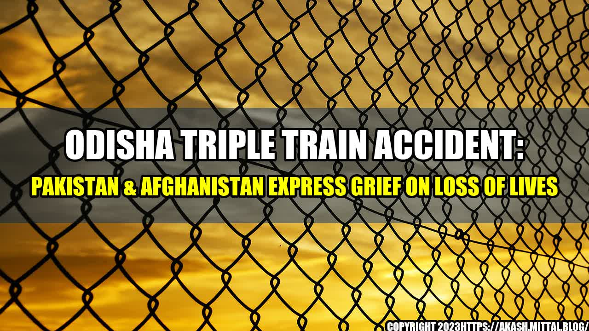

An Unfortunate Incident: Triple Train Accident in Odisha

It was a usual Monday morning for the people of Odisha when suddenly they were shaken by a triple train accident. Three trains collided with each other at the same time due to dense fog near the Keonjhar area. This incident took place when the Bhubaneswar-New Delhi Rajdhani Express hit the Puri-Ahmedabad Express from behind, which caused the Ahmedabad Express to hit into the stationary Khurda Road-Balangir Express.
The authorities reported that 23 passengers lost their lives and around 100 people were injured. The rescue operations were carried out immediately, and all the injured were taken to nearby hospitals for medical attention.
This was a tragic incident that left everyone saddened, not just in Odisha, but across the borders as well. Pakistan and Afghanistan also expressed their grief on the loss of lives.
Similar Accidents in the Past
Unfortunately, train accidents are not new in India. There have been several incidents in the past where train accidents have led to loss of lives and injuries. Here are a few case studies:
Kanpur Train Accident (2016)
The Kanpur train accident happened on November 20, 2016, in the Kanpur district of Uttar Pradesh. Indore-Patna Express derailed, resulting in the loss of 148 lives and injuring more than 200 people.
Amritsar Train Accident (2018)
The Amritsar train accident happened on October 19, 2018, on the occasion of Dussehra when a speeding train hit people who were standing on the railway tracks watching Ravana effigy burning. This accident led to the loss of 62 lives and multiple injuries.
Kalinga-Utkal Express Train Accident (2017)
The Kalinga-Utkal Express train accident happened on August 19, 2017, in the Muzaffarnagar district of Uttar Pradesh. The train derailed, resulting in the loss of 23 lives and injuring more than 150 people.
Conclusion
The frequent train accidents in India are a matter of concern that needs to be addressed. The government needs to take proactive measures to ensure the safety of passengers and the proper functioning of trains to prevent such accidents from occurring in the future.
The loss of innocent lives is a significant loss to the nation and a scar to the families of the deceased. The triple train accident in Odisha is a reminder that we need to emphasize safety measures and implement them for better utilization.
Lastly, all the injured people need to be taken care of and given proper medical attention to recover soon.
Curated by Team Akash.Mittal.Blog
Share on Twitter Share on LinkedIn